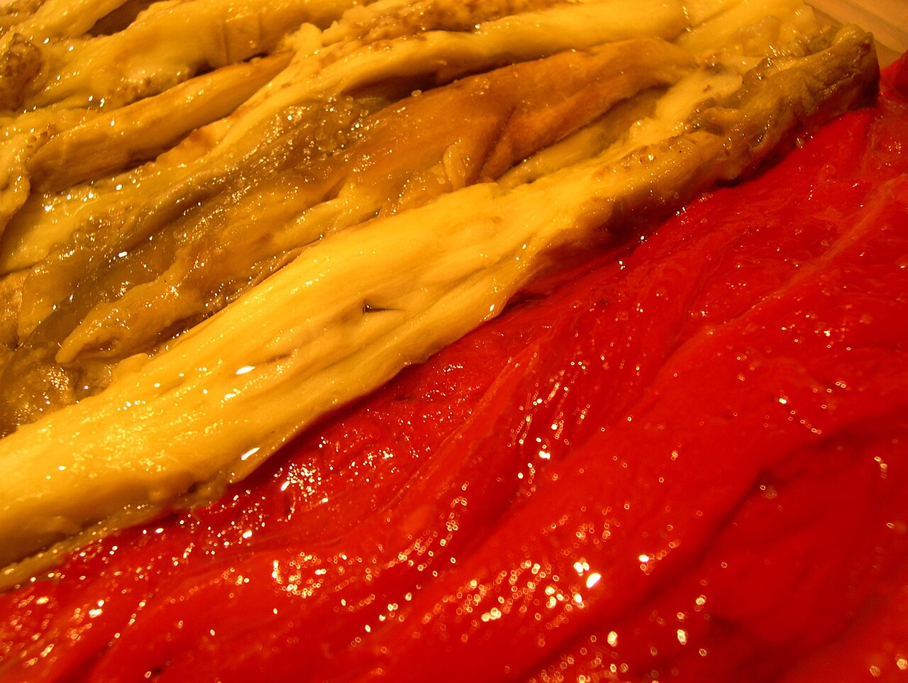

Receptes
Quatre clàssics de la cuina catalana. Dues receptes tenen fitxa completa amb vídeo.


Crema catalana
Crema de llet i ou amb crosta de sucre cremat. Típica de Sant Josep.
Fitxa completa properament
Escalivada
Verdures a la brasa —pebrot, albergínia i ceba— amb oli d'oliva.
Fitxa completa properament